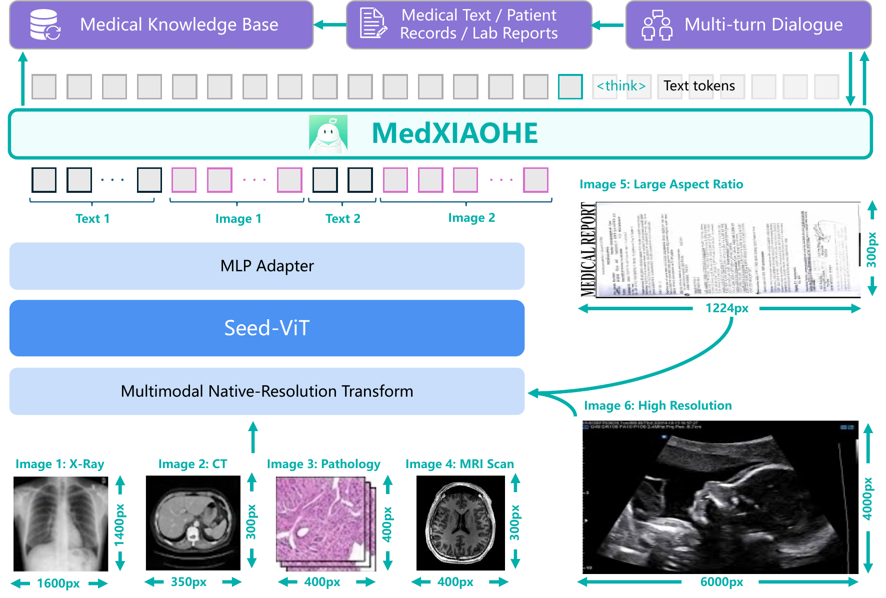
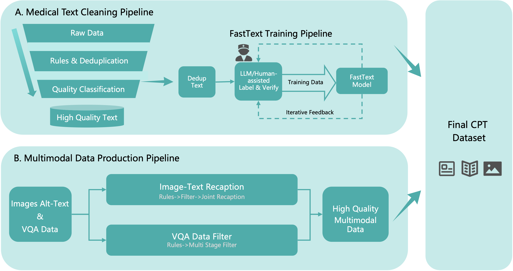
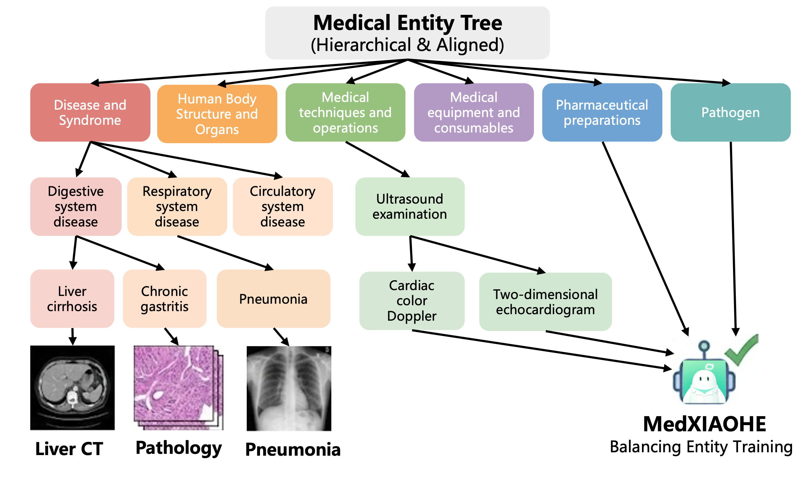
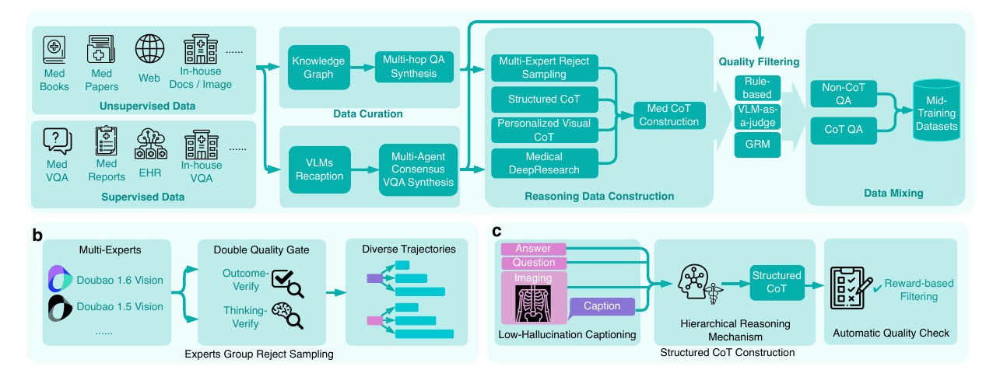
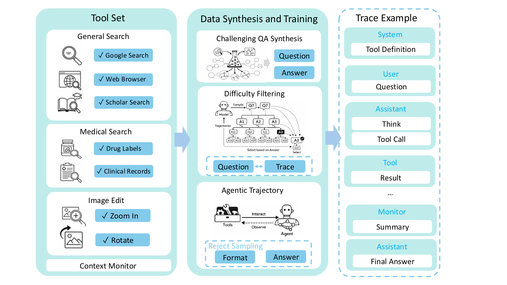
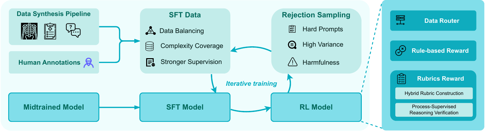
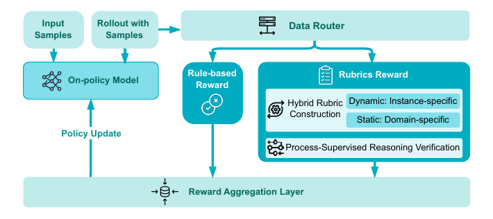

Technical Report · arXiv 2602.12705
MedXIAOHE数据覆盖 × 可验证推理 × Agentic RL
它没有重新设计 Seed 的 VLM 架构，而是把领域数据治理、长尾覆盖、视觉推理、工具轨迹和安全 reward 组织成一套可审计训练闭环。

Seed-ViT → MLP Adapter → autoregressive LLM；图像与文本进入统一 decoder。
640Bcontinual-pretraining tokens
1.4MMedical Entity Tree entities
30+public + in-house benchmarks
4-phaseRFT + curriculum RL cycle
01 · Data先把知识覆盖变成可测量问题

310B web + 280B licensed books/papers + 28B lesion images + 22B open datasets。

五层实体树用于平衡长尾、计算 coverage，并反向指导定向补数。
三层清洗
全局去重 → 规则过滤/规范化 → 医学质量模型过滤。
可审计冲突消解
树挂接冲突交给带检索的 ReAct Agent，并保留 reasoning 与 search evidence。
Coverage map
Forward AMCS 均超过 0.95；低 backward score 暴露基准未覆盖的长尾概念。
02 · ReasoningMid-training 先形成可靠 policy prior

KG 多跳、multi-expert rejection、结构化 CoT 与视觉 CoT。

Search / Scholar / Drug / Clinical 与 Zoom / Rotate 共同进入 Agent 轨迹。
两道质量门
Outcome-Verify 检查答案；Thinking-Verify 检查中间临床因果。
Perception–Reasoning 冲突
视觉任务使用短而 grounded 的 CoT，避免长文本推理稀释视觉证据。
工具必要性过滤
只保留无工具较难、且工具确实能改善结果的训练样本。
03 · RLReward 不是一个 LLM judge 总分

SFT、hard-negative mining 与 RL 迭代回流。

Rule / Rubric / Process reward 经安全 gate 融合。
RFT把偶发成功蒸馏回监督数据
Foundation用简单任务稳定 reward
Specialization集中攻克长程与高分辨率样本
Alignment重放通用/安全数据，保持可塑性
04 · Verdict真正值得迁移的训练判断
数据层
把失败映射到实体 coverage，区分缺知识与缺推理。
轨迹层
只训练“工具真正有效”的任务，避免伪 tool-use。
优化层
RFT 与 RL 循环，分别解决稀疏成功与持续探索。
证据边界：技术报告没有公开模型权重、参数规模、训练算力和全部内部 benchmark。报告足以支持方法精读，不足以复现，也不能把榜单结果理解为可独立进行临床诊断。